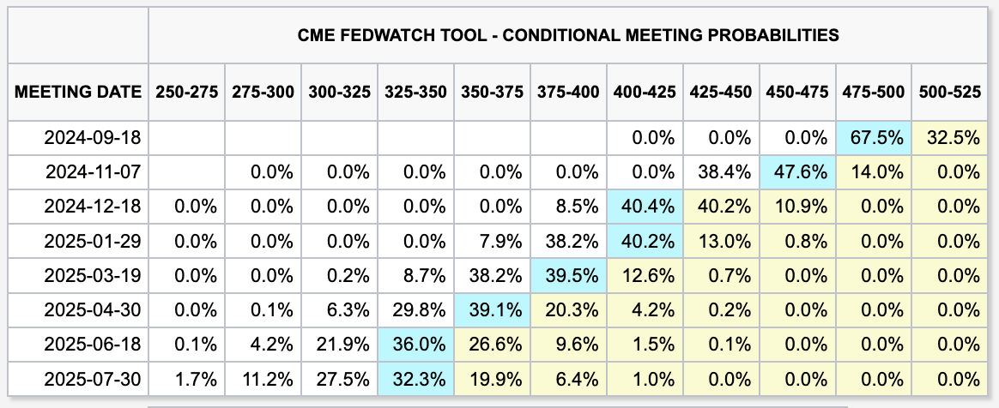

주식시장엔 아포칼립스가 도래한 것 같다
경제
//
2024년 08월 02일 작성
오늘도 미국의 여러 지표들이 나왔다. 특히 임금 관련 지표들이 너무 잘 나왔다. 여느 때였으면 호재를 부르짖으며 주식시장이 흥분했어야 할 그런 지표다.
그런데 하필이면 고용 관련 지표들이 주식시장에 뭔가를 던진 듯하다. 안 그래도 뭔가 터져서 난리가 난 곳에 이번엔 운석이라도 떨어진 듯하다.
미국 7월 비농업고용지수 114K (-65K)
미국 7월 실업률 4.3% (+0.2%)
비농업고용지수가 예상치를 아득히 하회하면서 꼴아박은 것도, 실업률 상승세가 게속 이어지고 있는 것도 어제에 이어 또 침체의 늪에 빠져들어가는 모습을 떠오르게 만든다.
 FedWatch
도박판의 베팅이 단 이틀만에 엄청나게 바뀌었다. 9월 50bp 인하 확률이 25bp 인하 확률보다 더 커져버렸다. 금리 인하 판에 빅스텝이라니 쉽게 구경하긴 힘든 일이 벌어질 지도 모르겠다.
포트폴리오의 어떤 종목에 찍힌 -20%라는 수치가 참 속이 쓰리다. 그래도 미장이라 기다리면 회복 되겠지만 좀 많이 오래 걸릴 것 같다.